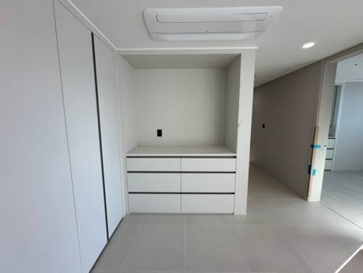
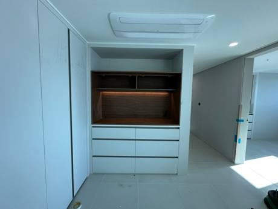
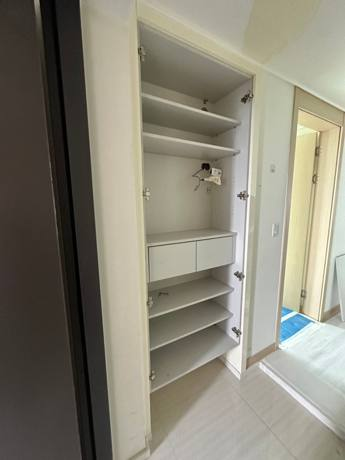
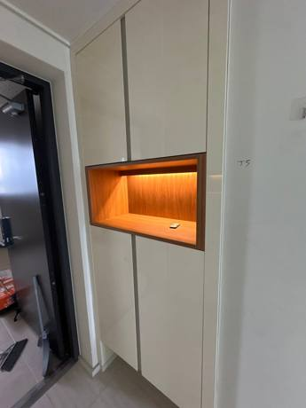
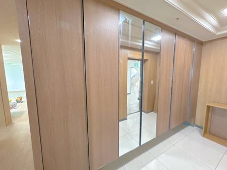
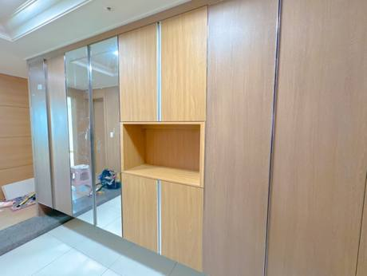
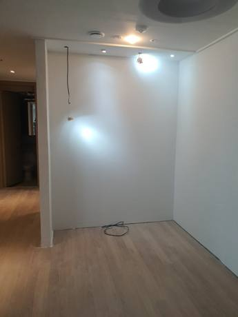
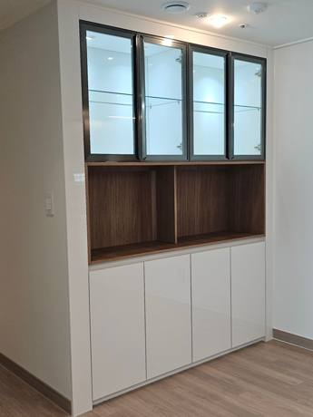

실제 현장
홈바장 맞춤제작
작업 사례


수납장대전 신축 아파트
틈새 홈카페장 + 로봇청소기장
냉장고 자리를 맞추면서 남는 틈에 홈카페장과 청소기 자리를.
2026.05.06자세히 보기 →


수납장대전 아파트 거실
나무 홈바 수납장 맞춤제작
하부장만 있던 거실 진열대에 우드 홈바장과 상부장을 더했어요.
2026.02.08자세히 보기 →


홈바·신발장대전 유성구 문지동
현관 신발장 LED 조명 홈바장
셀프 인테리어 중인 집. 칙칙한 신발장에 홈바와 은은한 조명을.
2025.07.01자세히 보기 →


홈바·신발장정읍 연지영무예다음2차
현관 붙박이장을 오픈형 홈바장으로
멀쩡한 신발장은 살리고 문짝과 구조만 바꿨어요.
2025.04.30자세히 보기 →


홈바·신발장청주
조명 유리문 홈바장 맞춤제작
비어 있던 벽에 장 안에서 조명이 들어오는 진열장을.
2025.04.13자세히 보기 →
디자인 홈바장 100만원부터 (VAT 별도). 사진을 보고 우리 집 금액을 알려드려요. 비용 자세히 보기